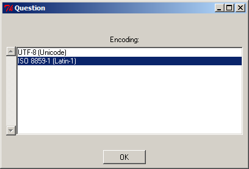

| FreeGuide | FAQ »
Invalid UTF 8 |
|
|
I get this message: "Error executing grabber: Invalid byte 2 of 2-byte UTF-8 sequence."This is a known bug in FreeGuide 0.10.9 when using the UK listings grabber. The bug report is here: Bug 305574. It is fixed in version 0.10.10 and later versions. The easiest way to avoid this bug is to download the latest version of FreeGuide. The second-easiest way (which is still quite easy) is to choose "ISO 8859-1 (Latin 1)" as your character encoding when running the "Choose Channels for XMLTV" configuration step for the UK grabber. Detailed instructions: Click Tools and then Choose channels for XMLTV: Click OK in the dialog that pops up, then choose ISO 8859-1 (Latin 1) for your encoding: 
Now continue the configuration process as normal, then click Download Listings and the download should now work correctly. |
| If you would like to help improve this site, please Contact Us and we will give you the password to edit pages. | |
| Page last modified on January 28, 2009 PmWiki Info | - - - () - |